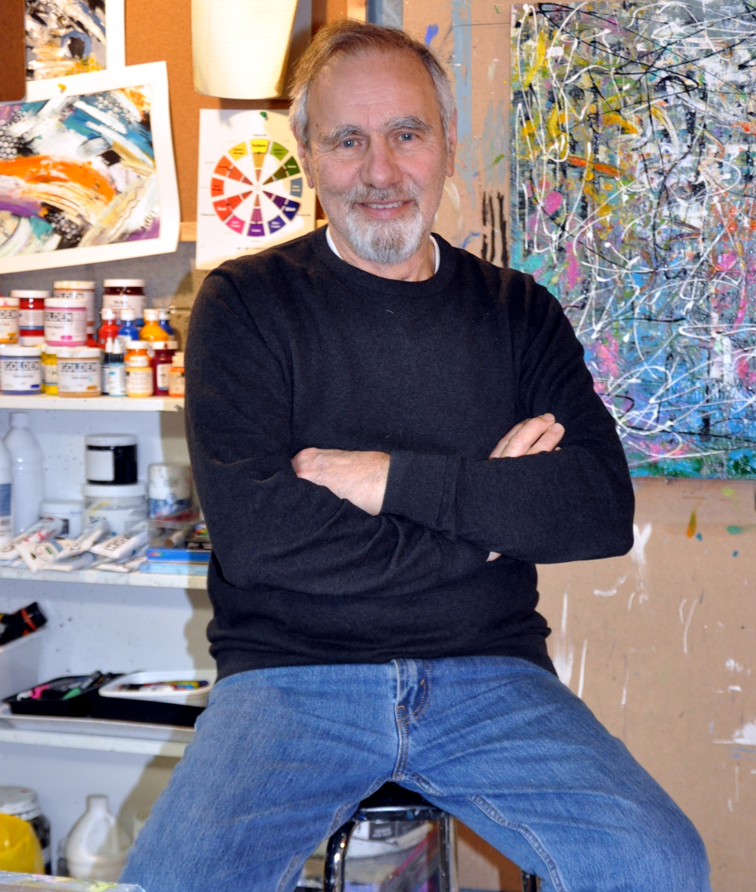
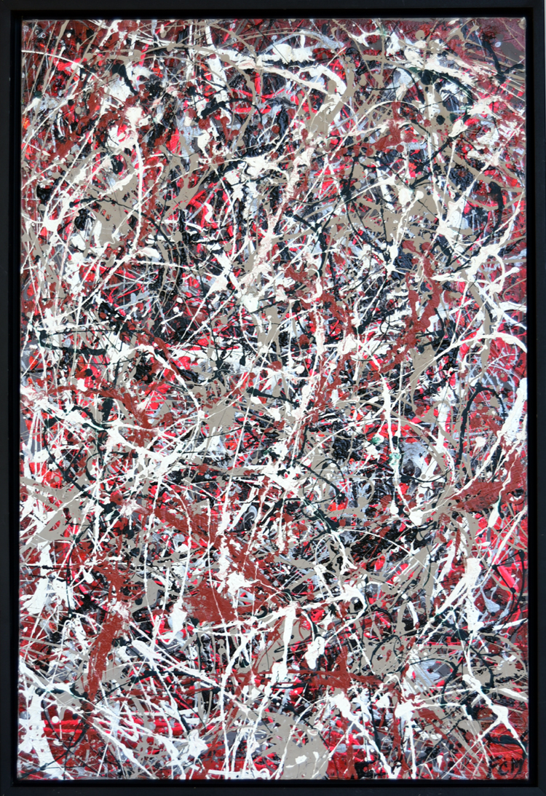
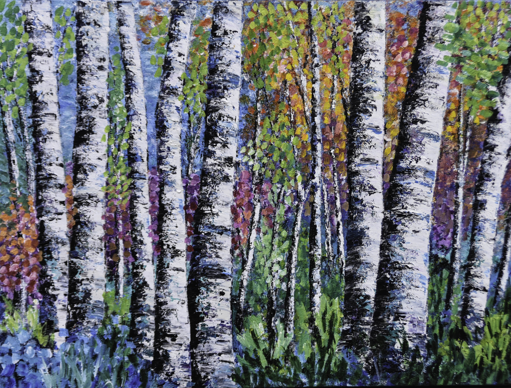

Frank is largely a self-taught artist whose work has developed over a number of years through study, research, and experimentation with acrylic paints and mixed media and also through various courses at Visual Arts Mississauga. His painting style is constantly evolving and ranges from semi-abstract to non representational and more recently to abstract expressionism. While a photograph or observed scene might serve as an initial point of inspiration, Frank’s work springs primarily from intuition, imagination, and emotional response. A retired mechanical engineer, Frank was born in Italy but has lived in Canada from a very young age and now resides in the Port Credit neighborhood of Mississauga.

